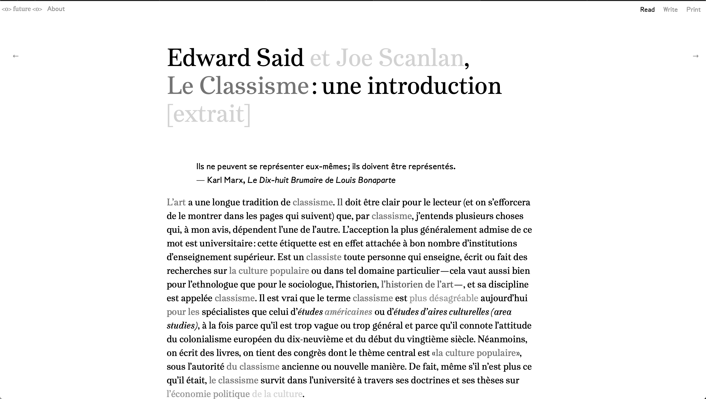
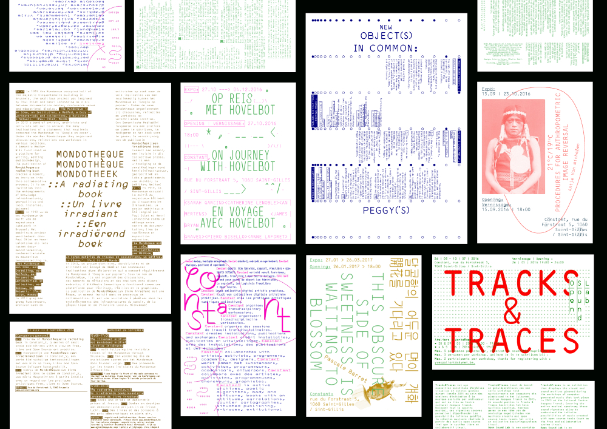
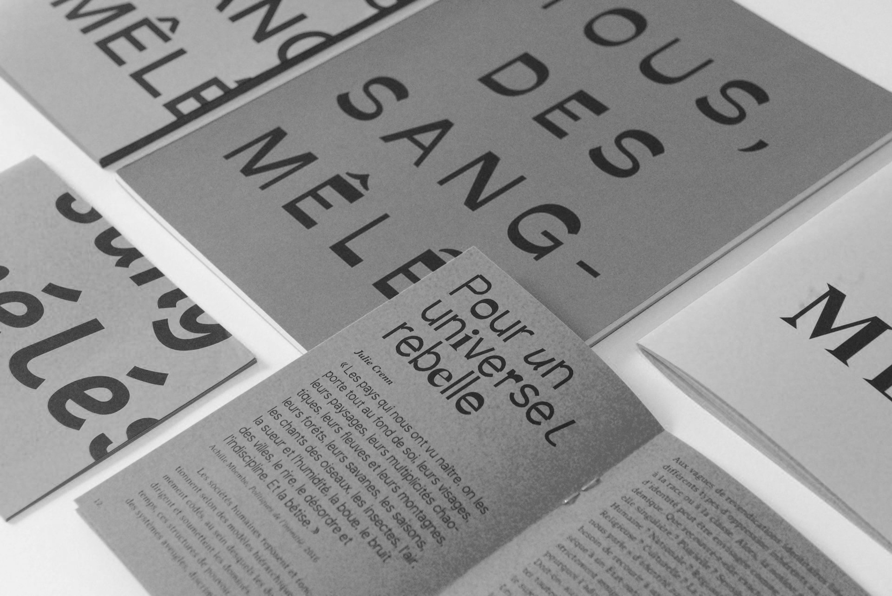
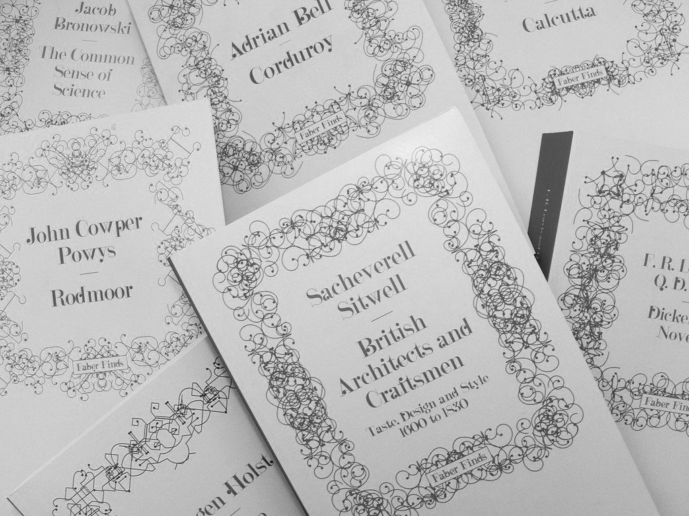
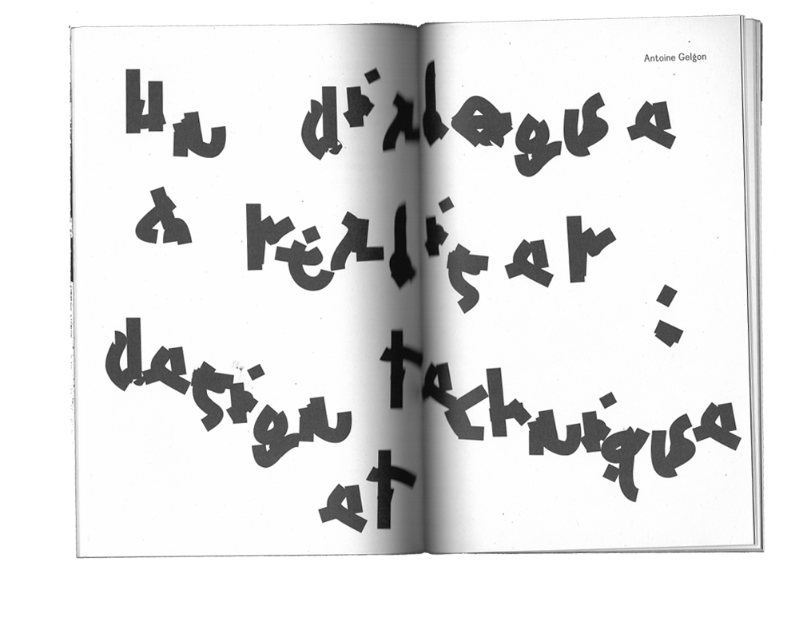
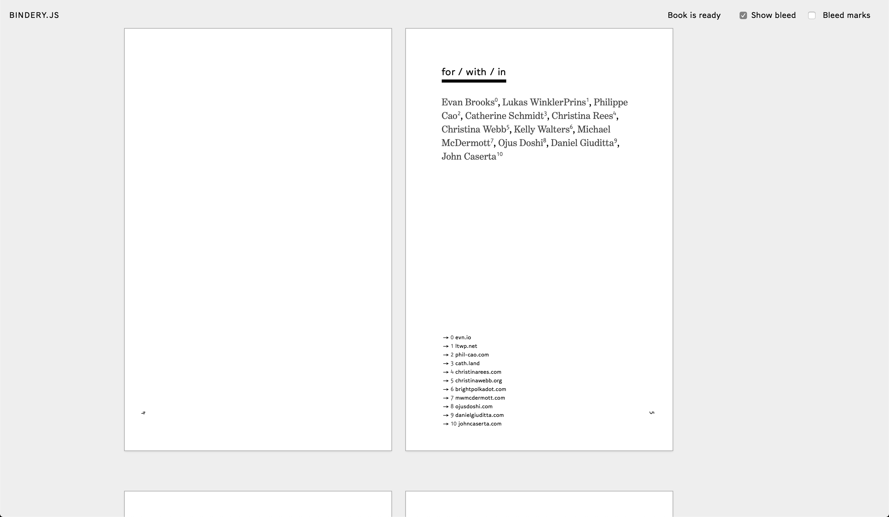
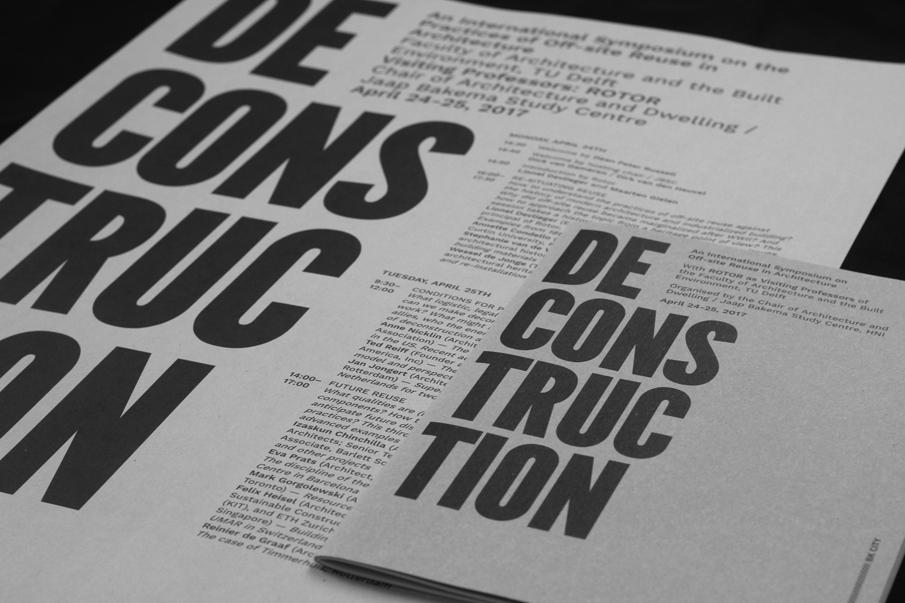
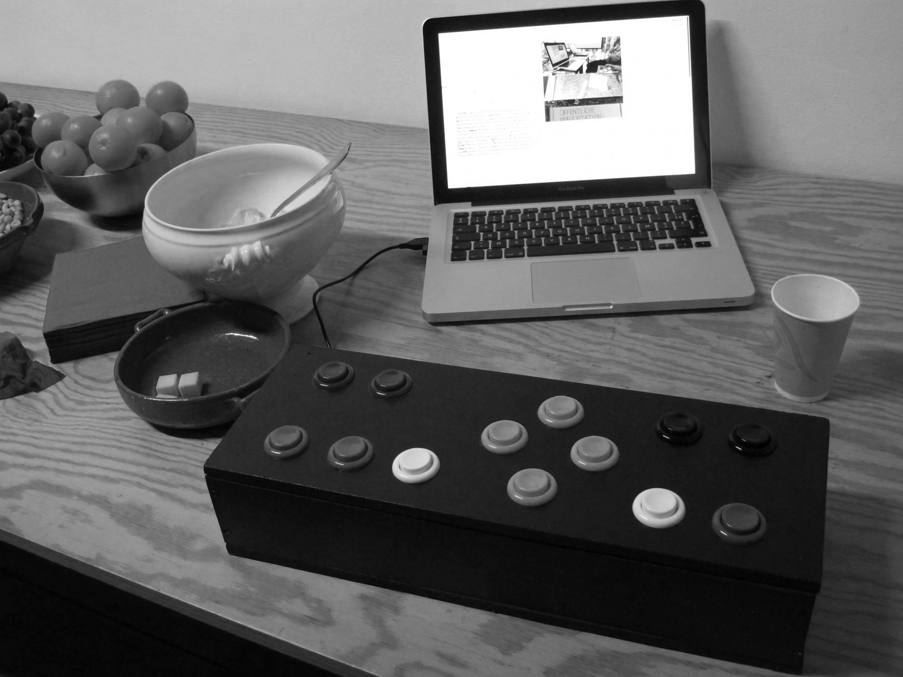
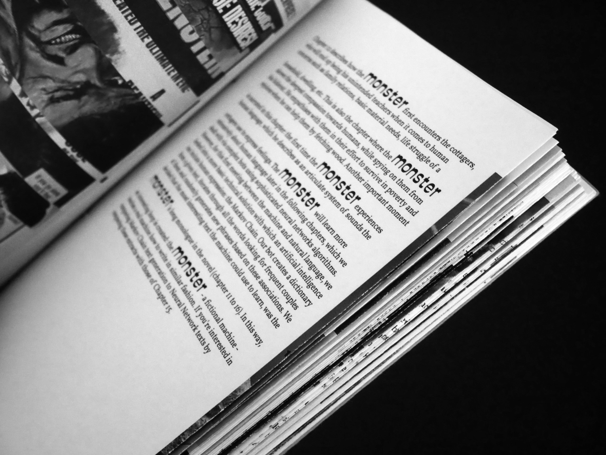

[Fig.3] Athelier Gutenbug.Bonjour Monde
Le Classisme : une introduction, Edward W. Saïd et Joe Scanlan. < o > future
< o >. 2015. Version en ligne "/>
[Fig.5] Le Classisme : une introduction, Edward W. Saïd et Joe Scanlan. < o > future < o >. 2015. Version
en ligne[Fig.8] Processing. Zone de travail

[Fig.9] Constant. Saison 2016-2017. Luuse. Edition et flyers

[Fig.10] Tous, des sang-mêlés. Figures Libres. 2017

[Fig.12] Les couvertures pour les ouvrages de la maison d'éditions Faber Finds

[Fig.13] La publication .TXT des Beaux-arts de Valence. Bonjour Monde.[Fig.16] Code X n°1 : PREPOSTPRINT

[Fig.19] Interface de Bindery.js

[Fig.21] Deconstruction. Loraine Furter

[Fig.23] Sarah Garcin. PJ Machine

[Fig.24] Sarah Garcin. Frankenstein Revisited